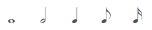
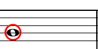
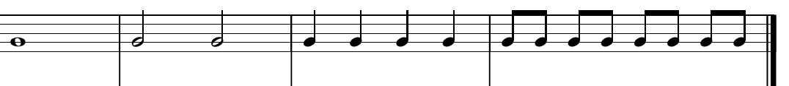

Em uma música podemos ter várias notas, porém essas notas tem durações diferentes dentro de um compasso.
A duração de uma nota pode ser representada de várias formas, como as demonstradas abaixo:
Vamos começar com a nota semibreve:
Ela representa uma batida no compasso de quatro tempos, no caso:
UM - DOIS - TRÊS - QUATRO
Ela representa duas batidas no compasso de quatro tempos, no caso:
UM - DOIS - TRÊS - QUATRO
UM - DOIS - TRÊS - QUATRO
Ela representa quatro batidas no compasso de quatro tempos, no caso:
UM - DOIS - TRÊS - QUATRO
Ela representa meia batida num compasso de quatro tempos, no caso:
UM - e - DOIS - e - TRÊS - e - QUATRO
Ou seja, cada representação é a metade da anterior, sendo assim 1, 2, 4, 8 e em diante...
